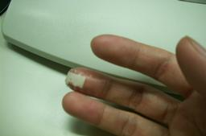
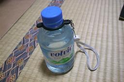

ChangeLog インデックスページ
/ chalow home page
ChangeLog
2001-11
2001-11-29
* けが: 酔っぱらっていたからか、包丁を洗っていたら指の先をちょっと
切ってしまった。セラミック包丁だからきれいに切れる。

* ラーメン: 広豚麺へ行く。健康を考えて、スープを全部飲むはやめる。
ちょっと名残惜しい。
2001-11-28
* どうでもいい話: 「とっとこハム太郎」に対抗して「どっとこむハム太
郎」ってのはどうでしょう?
2001-11-26
* スタートダッシュ: ものの本によると、一週間も一日もスタートダッシュ
が大切らしい。週の前半 (または、午前中) に一気に片付けて後半は余裕
を持つ。先行逃げきりというわけ。というわけで、今日は過剰労働。
2001-11-22
* ペットボトル: 先日 satoru-t 氏からもらった、ペットボトルの首には
めるゴム。今は、携帯ストラップをつけているけど、これがなかなか良い。
おでかけ時や社内での持ち運びがすごく楽になった。基本的にペットボト
ルは水筒として使っている。中身は湯冷まし。

* たつをのホームページ: http://nais.to/~yto/
2001-11-21
* 風邪気味: はなみずも止まった。ほぼ回復。しかし、油断は禁物。
2001-11-20
* 風邪気味: 昨日よりはだいぶ良い感じ。
ChangeLog インデックスページ
/ chalow home page